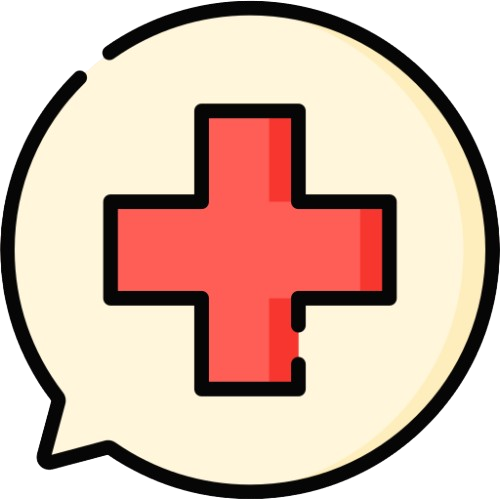
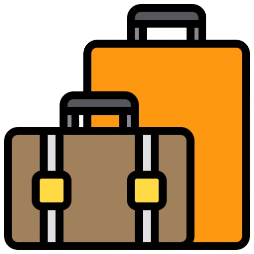
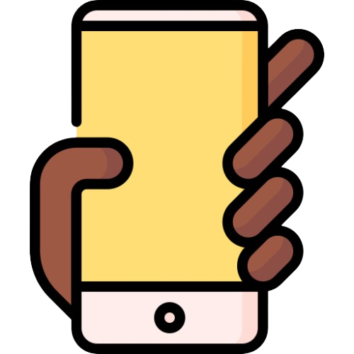

Seguro viagem Sirius Concorde
Viajar é mais do que se deslocar de um lugar a outro: é viver experiências, conhecer culturas, criar memórias e
realizar sonhos. Mas para que cada momento seja realmente inesquecível, é fundamental estar preparado para o
inesperado. Pensando nisso, a Sirius Concorde oferece um Seguro Viagem completo e exclusivo, que garante
tranquilidade, segurança e suporte em qualquer parte do mundo.
Nosso compromisso é cuidar de você em todas as etapas da sua jornada. Com o Seguro Viagem Sirius Concorde, você
tem acesso a uma ampla rede de serviços e coberturas que vão muito além do básico:
- Ajuda médica: se você ficar doente ou se machucar na viagem, tem médico e hospital pra cuidar de você sem gastar tudo do seu bolso.
- Mala protegida: se sua bagagem sumir, atrasar ou quebrar, o seguro ajuda pra você não ficar sem suas coisas.
- Doenças preexistentes: se você já tem algum problema de saúde e ele piorar durante a viagem, o seguro ajuda com atendimento e tratamento.
- Ajuda 24 horas: sempre tem alguém pra atender você, de dia ou de noite, em qualquer lugar do mundo.
Com a Sirius Concorde, você tem a confiança de uma empresa que entende que cada viagem é única e deve ser vivida com intensidade, liberdade e tranquilidade. Nosso seguro foi pensado para quem deseja explorar o mundo sem preocupações, sabendo que, em qualquer destino, haverá sempre uma equipe preparada para oferecer suporte imediato e soluções eficazes. Porque viajar é se abrir para o novo — e nós cuidamos de todos os detalhes para que o novo seja sempre uma experiência inesquecível. Sirius Concorde: onde cada viagem se torna inesquecível.

Assistência Médica
Você receberá atendimento médico seja por enfermidade ou acidente, da forma mais rá

Seguro Bagagem
Se sua bagagem for extraviada, reembolsamos os gastos com itens de primeira necessidade, e se não for
encontrada,
lhe pagamos uma indenização de até USD 1.000.
Doenças Preexistentes
Fique tranquilo! Você está totalmente coberto até o limite das Despesas Médicas do seu plano contratado!

Telemdicina 24hs7
Pelo app Assist Card, você terá atendimento por Telemedicina, e em português, de qualquer lugar do mundo!